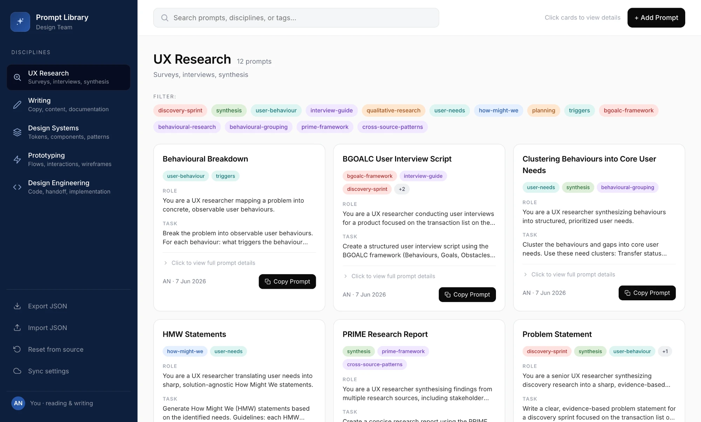

Keyboard-first and screen-reader friendly
Every action reachable without a mouse. Dialogs announce themselves to screen readers, trap keyboard focus, and close on Escape. Focus states visible on every control.

Written clearly, the first answer from the AI assistant is useful. Written vaguely, it guesses, and you spend the next hour fixing a guess.
Think of RTCCF as a little map for talking to the AI assistant. R is the Role: who it should be, like putting on a costume. A UX researcher. A copywriter. A kind editor. T is the Task: what that costume should actually do today. Those two are required, because without a who and a what, you’ve handed the assistant an empty stage. C, C and F (Context, Constraints, Format) are the props: they sharpen the scene when you add them, but a prompt stands on its own when the role and the task are strong. I use this framework because it stops me writing wishes and starts me writing scenes.

The whole library is a single HTML page, so it goes anywhere a browser does: pinned to a Mac dock, on a phone’s home screen, and read directly by Claude Code when I design.


“No sign-in” isn’t a shortcut, it’s a choice. A login wall is the first barrier a new designer on day one, a teammate on their own laptop, or anyone using a screen reader runs into. The rest of the decisions below were made in the same spirit.
Every action reachable without a mouse. Dialogs announce themselves to screen readers, trap keyboard focus, and close on Escape. Focus states visible on every control.
Body text 20:1 and navy sidebar 16:1 (both AAA). Secondary labels meet AA. Tag chips put dark text on pastel to hold 4.5:1 even where the palette is soft.
No consent banner, no analytics either. Once installed, it works without wifi, so a new teammate on day one, someone on a flight, or anyone on a slow connection sees the same 33 prompts.